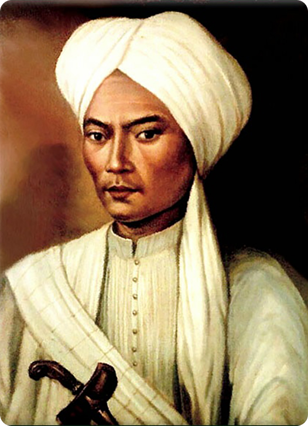

Pangeran Diponegoro
Pangeran Diponegoro, lahir pada 11 November 1785 dengan nama Raden Mas Antawirya, adalah putra sulung Sultan Hamengkubuwono III. Meskipun seorang putra mahkota, ia menolak kehidupan mewah keraton. Ia lebih memilih tinggal di luar istana, mendalami ajaran Islam, dan berinteraksi langsung dengan rakyat. Sikap ini membuatnya sangat dihormati dan dicintai oleh masyarakat Tegalrejo, tempat ia tinggal. Pemicu Perang Jawa Hubungan antara Diponegoro dan Belanda semakin tegang karena campur tangan Belanda dalam urusan keraton dan kebijakan yang merugikan rakyat. Puncaknya, pada Mei 1825, Belanda secara sepihak membangun jalan yang melewati makam leluhur Diponegoro. Tindakan ini dianggap sebagai penghinaan berat. Peristiwa ini menjadi pemicu langsung bagi Pangeran Diponegoro untuk memimpin perlawanan bersenjata terhadap pemerintah kolonial Belanda. Strategi Perang dan Akhir Perjuangan Perang Diponegoro (1825-1830) menjadi salah satu perang terberat bagi Belanda. Pasukan Diponegoro menggunakan strategi perang gerilya, menyerang secara tiba-tiba dari hutan dan pegunungan, yang membuat Belanda kewalahan. Namun, Belanda membalas dengan siasat benteng stelsel, membangun benteng-benteng untuk mempersempit ruang gerak pasukan Diponegoro. Akhirnya, pada tahun 1830, Belanda menjebak Diponegoro dalam perundingan palsu di Magelang. Ia ditangkap dan diasingkan, hingga wafat di Makassar. Warisan Pahlawan Meskipun kalah dan ditangkap, perjuangan Pangeran Diponegoro tidak sia-sia. Perang ini menguras habis tenaga dan dana Belanda, dan menjadi inspirasi besar bagi perjuangan kemerdekaan di masa depan. Ia dikenang sebagai simbol perlawanan, keberanian, dan semangat nasionalisme.
← Kembali